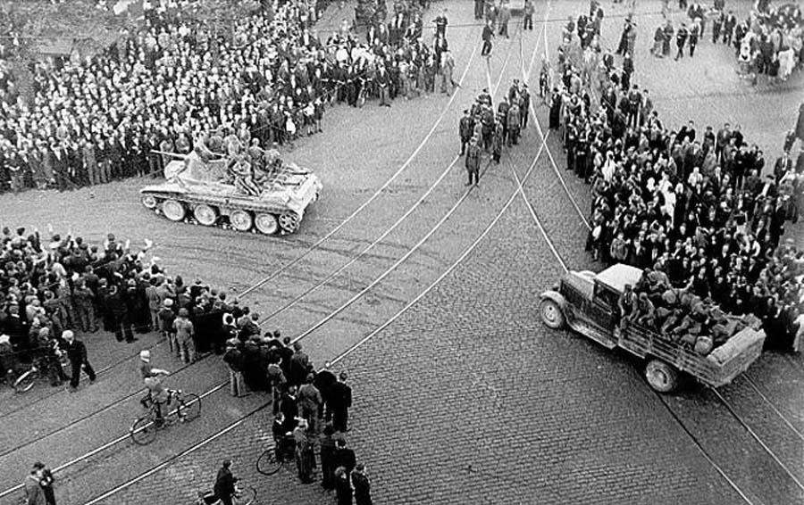
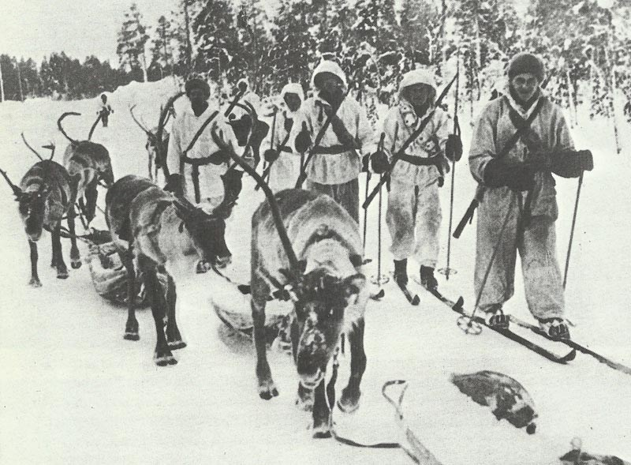
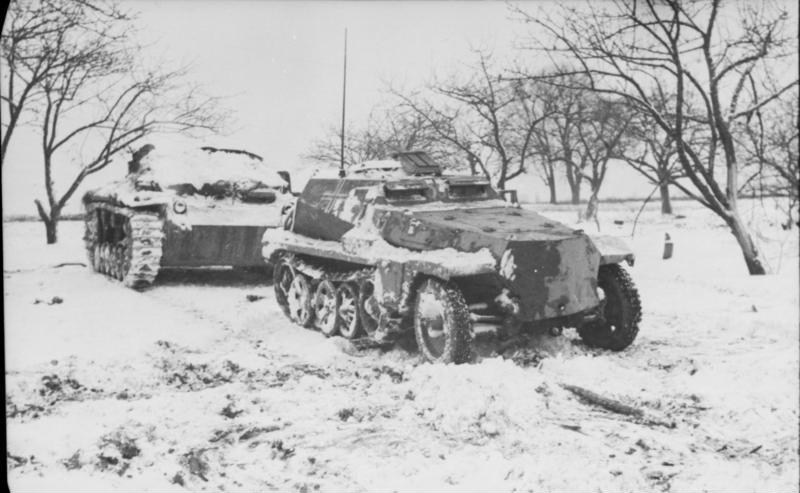

Avantajul URSS-ului
URSS-ul s-a bucurat de un substanțial avantaj numeric față de finlandezi. A avut de trei ori mai
mulți soldați, de treizeci de ori mai multe avioane și de sute de ori mai multe tancuri. Cu toate
acestea, Armata Roșie a fost lovită grav de epurările lui Stalin de dinainte de război. Aproximativ
30 de mii de ofițeri au fost executați sau închiși. Acest lucru, precum și moralul ridicat al
finlandezilor, au făcut ca atacurile sovietice să fie respinse timp de câteva luni de finlandezi.

Avantajul Finlandei
Pe frontul din Istmul Careliei, apărătorii finlandezi s-au bazat pe teren, această zonă fiind
împădurită puternic, iar drumurile au fost foarte puține. Aici a avut loc prima victorie finlandeză
din timpul campaniei. La Tolvajärvi, două divizii sovietice au fost înfrânte de o forță finlandeză,
mult inferioară din punct de vedere numeric.

Generalii sovietici au fost impresionați de rezultatele tacticilor blitzkrieg adoptate de armata
germană. Dar blitzkrieg-ul a fost conceput pentru țările din Europa centrală și de vest care
dispuneau de rețele de drumuri bine puse la punct. Acestea aveau și centre de comunicații și
aprovizionare ce puteau fi atacate cu ușurință de forțe blindate. În contrast, centrele armatei
finlandeze se aflau în interiorul țării. În Finlanda drumurile pavate nu existau, iar cele de pământ
erau în stare proastă. O mare parte din teritoriul țării era acoperit de păduri, astfel că adoptarea
blitzkrieg-ului a fost problematică.
